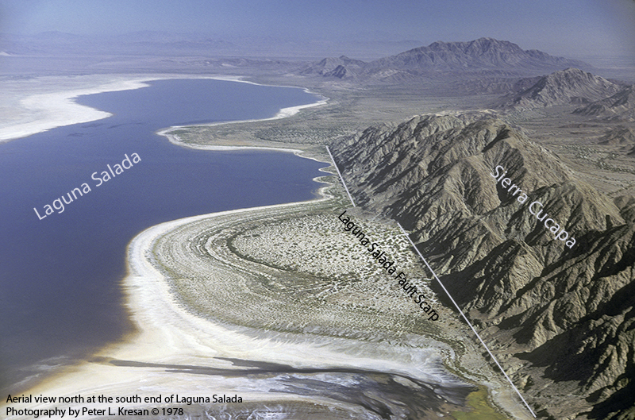
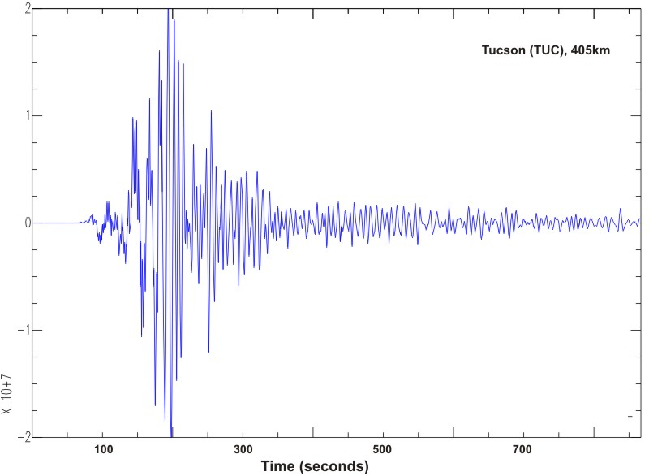
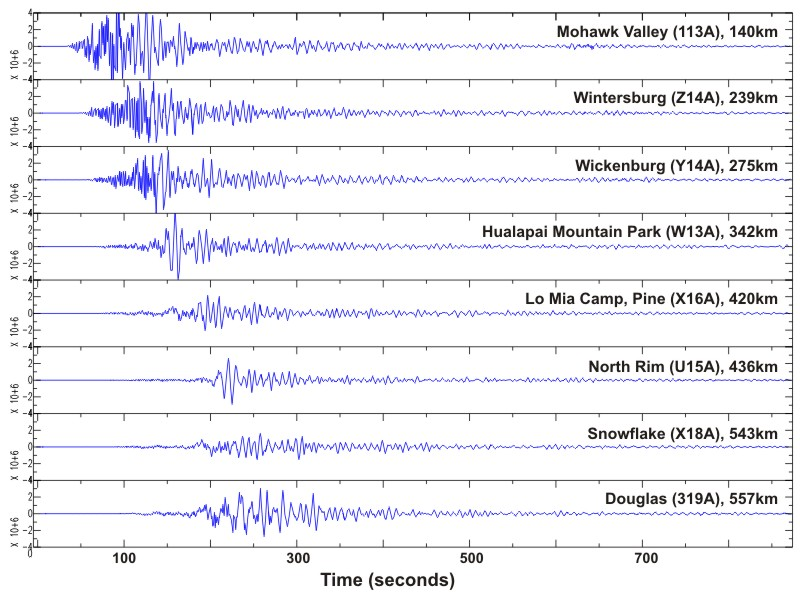
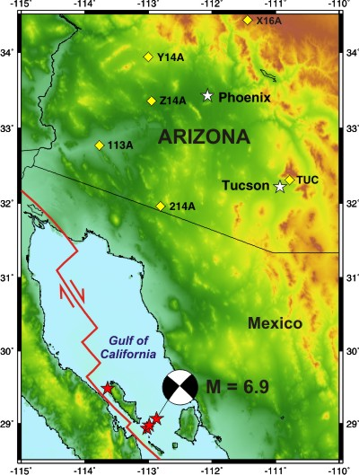

Significant Earthquakes
8 September 2017, Chiapas, Mexico Earthquake
The 8 September 2017 Mexico earthquake (M 8.2) occurred near the Middle America Trench, where the Cocos and North American plates converge. The normal faulting, intermediate depth earthquake occurred at a depth of 47.4 km (USGS), suggesting an intraplate event.
Following the event, PhD student Haiyang Kehoe and Professor Eric Kiser used the U.S. Transportable Array, which was deployed in Alaska during this time, to study the earthquake's source properties (see below). The earthquake's spatiotemporal evolution of seismic energy release provides key information regarding the rupture's propagation direction and velocity. Studies such as these allow us to gain a better understanding of the physics of faulting and hazards.
The 8 September 2017, Chiapas, Mexico epicenter (red beach ball) and the U.S. Transportable Array (red inverted triangles).

Energy release as a function of time (upper left corner) for this event. Warm and cold colors represent high and low amplitude energy release, respectively. The white star is the epicenter of the event, the white line is the coastline of Mexico, and the toothed line shows the subducting Cocos plate.
Seismograms (north (BH1), east (BH2), and vertical (BHZ) components from top to bottom) recorded 23.1° from the event at the TUC GSN station in Tucson, Arizona.
16 April 2016, Pedernales, Ecuador
On April 16, 2016 a magnitude 7.8 earthquake occured just offshore of Pedernales, Ecuador. The event was a shallow, 20.6 km depth, thrust which occurred at the interface between the subducting Nazca plate and upper South America plate. Large magnitude events, like this, are often followed by high numbers of aftershocks which continue for months to years after the main event. The characterization of these aftershocks may provide important insights into processes within the earthquake cycle. UA's GSAT group (Susan Beck, Colton Lynner, and Rob Porritt) co-led a Rapid Array Mobilization Project (RAMP) deployment in Ecuador with researchers at Lehigh University (Anne Meltzer and Josh Stachnik) to study the aftershock sequence of this event The RAMP deployment was also in collaboration with Mario Ruiz at Instituto Geofisico – Escuela Politecnica Nacional from Ecuador and international groups from France, Germany, and the U.K.
1 April 2014, Iquique, Chile
A M8.2 earthquake occured on April 1, 2014 off the shore of Iquique, Chile. This event filled in a major seismic gap in northern Chile which last ruptured as an estimated M8.8 in 1877.
Location of the Iquique earthquake and aftershocks.
Seismograms of the event recorded by the Tucson seismic station (TUC).
27 February 2010, Maule, Chile

The February 27, 2010 Earthquake (Mw=8.8) occurred along the Chile trench where the Nazca Plate is subducting beneath the South America Plate. The earthquake ruptured a portion of the plate boundary that previously ruptured a series of earthquakes in 1835, 1928, 1906 and 1985. It occurred adjacent to the 1960 Chile Earthquake (Mw=9.5) rupture zone. The earthquake was well recorded at the Tucson seismic station in the Catalina Mountains, as well as at stations across Arizona. The first P wave arrival reached Tucson just less than 12 minutes after the initiation of the earthquake.
Map of the largest earthquakes along the coast of Chile this century (based on Beck et al., 1998).
Space-time plot of large to great earthquakes along the coast of south central Chile.
Seismograms from Arizona
Earthquakes Near Tucson
29 June 2014, M5.2 Southeast New Mexico-Arizona Border
For detailed information about this event, please refer to the following:
The USGS Event Page
The AZGS Press Release
Seismograms: Station Tucson (TUC)
Seismograms: North American Permanent Stations
Aftershocks Recorded at Station Tucson (TUC)
4 April 2010, Baja California

On April 4, 2010 at 3:40 pm Tucson time a magnitude 7.2 earthquake occurred in Baja California, approximately 400 km west of Tucson. The event was felt with an intensity of II and III (Modified Mercalli Scale) in the Tucson and Phoenix areas. It took the initial P wave a little over one minute to travel from the source to Tucson. The main shock occurred along a strike slip segment of the North America-Pacific plate boundary that coincides with the southeastern part of the Laguna Salada fault. This is the largest earthquake in the vicinity of Tucson since the magnitude 6.9 Gulf of California on August 3, 2009.
The seismic station near Tucson (TUC) as well as the stations from Arizona Broadband Seismic Network recorded the event. The TUC station is part of the Global Seismic Network operated by IRIS and the USGS and it is also part of the Arizona Integrated Seismic Network that consists of 12 broadband seismic stations and 6 short period stations across the state. Eight of these stations were recently purchased by the Arizona Geological Survey as part of a collaborative project with the University of Arizona, Arizona State University, and Northern Arizona University and funded by FEMA.
An aerial view looking north of the south end of the Laguna Salada Fault - the location of the 7.2 Mw April 4, 2010 earthquake (Photo credit: Peter L. Kresan)
Seismogram Station Tucson (TUC)
Seismograms Arizona Broadband Seismic Network

Station TUC Seismograms for the August 3, 2009 and April 4, 2010 earthquakes
3 August 2009, Gulf of California
A series of earthquakes occurred on August 3, 2009 in the Gulf of California, the largest of which was felt in the Tucson and Phoenix area of southern Arizona. The largest event, a magnitude 6.9 occurred at 10:59 am Tucson time. It took the initial P wave a little over one minute to travel from the source to Tucson. The earthquake was a strike-slip event (horizontal motions on a vertical fault) associated with the plate boundary between the North America and Pacific plates. The lack of vertical faulting probably prevented the generation of a tsunami from this large earthquake. At this location the plate boundary is a series of short normal faults and longer strike slip faults causing the Gulf of California to open up. The mainshock was followed by a magnitude 6.2 event 50 km to the northwest as well as several aftershocks. There was also a magnitude 5.8 foreshock about 4 minutes before the large 6.9 event, but at the time there was no way to know that it was a foreshock and a larger event was going to occur.
The earthquake was felt in Tucson on the 10th floor of the Gould Simpson Building at the University of Arizona and in several of the tall building downtown. Most of Tucson is built on a sedimentary basin that amplifies the ground shaking more than structures built on hard rock at a similar distance from the earthquake. It is rare to feel earthquakes in Tucson but this event reminds us that we are not very far from a major plate boundary.
The seismic station near Tucson (Code name TUC) is part of the Global Seismic Network operated by IRIS and the USGS. It is also part of the Arizona Integrated Seismic Network that consists of 12 broadband seismic stations and 6 short period stations across the state. Eight of these stations were recently purchased by the Arizona Geological Survey as part of a collaborative project with the University of Arizona, Arizona State University and Northern Arizona University and funded by FEMA.
Seismograms Arizona Broadband Seismic Network
Seismograms Station Tucson (TUC)
Other Earthquakes
1887 Great Sonoran
Compiled references by Norm Meader:
Abstracts
Bull, W. B., S. S. Calvo, P. A. Pearthree, and J. Quade, Frequencies and magnitudes of surface rupture along the Pitaycachi fault, northeastern Sonora, Mexico (abstract), Geol. Soc. Am. Abstr. Prog., Cordilleran Section, 13, 47, 1981.
Gianella, V. P., Faulting in northeastern Sonora, Mexico, in 1887 (abstract), Bull. Geol. Soc. Am., 71, 2061, 1960.
Herd, D. G., and C. R. McMasters, Surface faulting in the Sonora, Mexico earthquake of 1887 (abstract), Geol. Soc. Am. Abstr. Prog., 14, 172, 1982.
Menges, C. M., P. A. Pearthree, and S. Calvo, Quaternary faulting in southeast Arizona and adjacent Sonora, Mexico (abstract), Geol. Soc. Am. Abstr. Prog., Cordilleran Section, 78th Annual Meeting, 14(4), 215, 1982.
Wagner, F., and R. A. Johnson, Near-surface seismic imaging across the Pitaycachi fault, northeastern Sonora, Mexico (abstract with poster), Geol. Soc. Am. Abstr. Prog., Paper No. 118-17, Annual Meeting, 2002. On-line abstract available from GSA at http://gsa.confex.com/gsa/2002AM/finalprogram/abstract_45910.htm
Historial Accounts/Studies
Aguilera, J. G., Estudio de los fenomenos seismicos del 3 de Mayo de 1887, Anales del Ministereo de Fomento de la Republica Mexicana, X, 5–56, 1888.
Aguilera, J. G., The Sonora earthquake of 1887, Bull Seismol. Soc. Am., 10, 31–44, 1920 (excerpts from Aguilera [1888] translated by Andrew C. Lawson).
An Occasional Correspondent, Earthquake phenomena in Arizona , The Engineering and Mining Journal, June 11, 1887, 417–418 (submitted from Tombstone, Ariz., May 25, 1887).
Bennett, E. F., An afternoon of terror: The Sonoran earthquake of May 3, 1887, Arizona and the West, A Quarterly Journal of History, edited by H. P. Hinton, 19( 2), 107–120, summer issue, 1977. (Reconstructed in Word and saved as a pdf.)
Goodfellow, G. E., The Sonora earthquake, Science, 9(224), 483–484, 1887a.
Goodfellow, G. E., The Sonora earthquake, Science, 10(236), 81–82, 1887b.
Goodfellow, G. E., The Sonora earthquake, Science, 11(270), 162–166, 1888.
Harper's Weekly (no author given), The Sonora earthquake, Harper's Weekly, 471, July 2, 1887.
Hunt, T. S., and J. Douglas, The Sonora earthquake of May 3, 1887, Am. Naturalist, 22, 1,104-1,106, 1887a.
Hunt, T. S., and J. Douglas, The Sonora earthquake of May 3, 1887, Nature, XXXVI, 572, 1887b.
Hunt, T. S., and J. Douglas, The Sonora earthquake of May 3, 1887, Trans. Seismol. Soc. Japan, 12, 29-31, 1888.
MacDonald, B., Remarks on the Sonora Earthquake—Its behavior at Tepic, Sonora, etc., Bull. Seismol. Soc. Am., 8, 74-78, 1918.
Staunton, W. F., Effects of an earthquake in a mine at Tombstone, Arizona, Bull. Seismol. Soc. Am., 8, 25-27, 1918.
Scientific Studies/Summaries
Bull, W. B. and P. A.Pearthree, Frequency and size of Quaternary surface ruptures of the Pitaycachi fault, northeastern Sonora, Mexico, Bull. Seismol. Soc. Am., 78(2), 956-978, 1988.
DuBois, S. M., Earthquakes, Fieldnotes, 9(1), 1–9, Ariz. Bur. Geol. Min. Tech. (now Arizona Geological Survey), Tucson, March 1979. (Contains a partial list of rockfalls associated with 1887 Earthquake.)
DuBois, S. M., and M. Sbar, The 1887 Earthquake in Sonora: Analysis of regional ground shaking and ground failure, in Proceedings of Conference XIII, Evaluation of Regional Seismic Hazards and Risk, (Santa Fe, New Mexico, August 25-27, 1980), edited by W. W. Hays and compiled by B. B. Charonnat, U.S. Geol. Surv. Open File Rep. 81-437, Reston, VA, 1981.
Castro, R. R., P. M. Shearer, L. Astiz, M. Suter, C. Jacques-Ayala, and F. Vernon, The Long-Lasting Aftershock Series of the 3 May 1887 Mw 7.5 Sonora Earthquake in the Mexican Basin and Range Province, Bull. Seismol. Soc. Am., 100(3), 1153–1164, 2010.
DuBois, S. M. and A. W. Smith, The 1887 Earthquake in San Bernardino Valley, Sonora: Historic accounts and intensity patterns in Arizona, Univ. Ariz. Bur. Geol. Min. Tech. Special Paper No. 3, 112 pp., Tucson, Ariz. (now the Arizona Geological Survey), 1980.
McGarvin, T. G., The 1887 Sonoran earthquake: It wasn’t our fault, Fieldnotes, 17(2), 1-2, summer 1987 issue, published by Ariz. Bur. Geol. Min. Tech., Tucson, Ariz. (now the Arizona Geological Survey).
Natali, S. G., and M. L. Sbar, Seismicity in the epicentral region of the 1887 northeastern Sonoran earthquake, Mexico, Bull. Seismol. Soc. Am., 72(1), 181-196, 1982.
Pearthree, P. A., Late Quaternary faulting and seismic hazard in southeastern Arizona and adjacent portions of New Mexico and Sonora, Mexico, Ariz. Geol. Surv. Open File Rep. OFR-86-8, 22 pp., Tucson, Ariz., 1986.
Pearthree, P. A., W. B. Bull, and T. C. Wallace, Geomorphology and Quaternary geology of the Pitaycachi Fault, northeastern Sonora, Mexico, in Geologic Excursions Through the Sonoran Desert Region, Arizona and Sonora, edited by G. E. Gehrels and J. E. Spencer, pp. 124-135, University of Arizona Press, Tucson, 1990.
Sbar, M. L. and S. M. Dubois, Attenuation of intensity for the 1887 Northern Sonora, Mexico, earthquake, Bull. Seismol. Soc. Am., 74, 2613–2628, 1984. Also available at http://bssa.geoscienceworld.org/cgi/reprint/74/6/2613.pdf
Sumner, J. R., The Sonora earthquake of 1887, Bull. Seismol. Soc. Am., 67(4), 1219-1223, 1977.
Suter, M., The historical seismicity of northeastern Sonora and northwestern Chihuahua, Mexico (28–32°N, 106–111°W), J. S. Am. Earth Sci., 14, 521–532, 2001.
Suter, M., Rupture of the Pitáycachi Fault in the 1887 Mw 7.5 Sonora, Mexico earthquake (southern Basin-and-Range Province): Rupture kinematics and epicenter inferred from rupture branching patterns, Journal of Geophysical Research: Solid Earth, 120, 617-641, 2015.
Suter, M., Contemporary studies of the 3 May 1887 Mw 7.5 Sonora, Mexico (Basin and Range Province) earthquake, Seismol. Res. Lett., 77(2), 134–147, 2006. Also available at http://srl.geoscienceworld.org/cgi/reprint/77/2/134.pdf
Suter, M., and J. Contreras, Active tectonics of northeastern Sonora, Mexico (Southern Basin and Range Province) and the 3 May 1887 Mw 7.4 earthquake, Bull. Seismol. Soc. Am., 92(2), 581-589, 2002.
Suter, M., Structural Configuration of the Otates Fault (Southern Basin and Range Province) and Its Rupture in the 3 May 1887 MW 7.5 Sonora, Mexico, Earthquake. Bull. Seismol. Soc. Am., 98(6), 2879–2893, 2008.
Suter, M., Structural confi guration of the Teras fault (southern Basin and Range Province) and its rupture in the 3 May 1887 MW 7.5 Sonora, Mexico earthquake. Revista Mexicana de Ciencias Geológicas, 25 (1), 179-195, 2008.
Wallace, T. C., and P. A. Pearthree, Recent earthquakes in northern Sonora, Arizona Geology, 19(3), 6-7, fall issue, 1989.
Wallace, T. C., A. M. Domitrovic, and P. A. Pearthree, Southern Arizona earthquake update, Arizona Geology, 18(4), 6–7, winter issue, 1988.
Other References
Bakun, W. H., MMI Attenuation and Historical Earthquakes in the Basin and Range Province of Western North America, Bull. Seismol. Soc. Am., 96(6), 2206–2220, 2006. (Uses 1887 earthquake as example.) Also available at http://bssa.
geoscienceworld.org/cgi/reprint/96/6/2206.pdf
Bausch, D., Seismic-Hazard Mapping in Arizona, Arizona Geology, 23(2), 4-5, Summer 1993.
Castro, R. R., Condori, C., Romero, O., Jacques, C., and M. Suter. Seismic Attenuation in Northeastern Sonora, Mexico., Bull. Seismol. Soc. Am., 98: 722–732, 2008.
De Polo, C. M., D. G. Clark, D. B. Slemmons, and A. R. Ramelli, Historical surface faulting in the Basin and Range Province, western North America: Implications for fault segmentation, J. Struct. Geol., 13, 123–136, 1991. (References 1887 earthquake, with short discussion)
Dubois, S. M., and A. W. Smith, Earthquakes causing damage in Arizona, Fieldnotes, 10(3), 4-5, September 1980.
DuBois, S. M., Sbar, M.L., and Nowak, T.A., Historical seismicity in Arizona, Ariz. Bur. Geol. Min. Tech. Open-File Rep. 82-21, 199 pp., Tucson, 1982.
DuBois, S. M., A.W. Smith, N.K. Nye, and T.A. Nowak, Jr., Arizona Earthquakes, 1776-1980, Ariz. Geol. Surv. Bull. B-193, 456 p., scale 1:1,000,000 [includes Map 16], 1982. [$15.00]
Fellows, L. D., Earthquake Hazard in Arizona, Arizona Geology, 30(1), 1-4, Spring 2000. Also available in html format at http://www.azgs.state.az.us/Spring2000.htm.
Fernández, A. I., R. R. Castro, and C. I. Huerta. The Spectral Decay Parameter Kappa in Northeastern Sonora, Mexico, Bull. Seismol. Soc. Am., 100(1), 196-206, 2010; DOI: 10.1785/0120090049.
Pearthree, P. A. and S. S. Calvo, The Santa Rita fault zone: Evidence for large magnitude earthquakes with very long recurrence intervals, basin and range province of southeastern Arizona, Bull. Seismol. Soc. Am., 77(1), 97–116, 1987. Also available at http://bssa.geoscienceworld.org/cgi/reprint/77/1/97.pdf
Sturgul, J. R., and T. D. Irwin, Earthquake history of Arizona, 1850-1966, Ariz. Geol. Soc. Dig., 9, 1-22, 1971.
Sumner, J. S., Earthquakes in Arizona, Fieldnotes, 6(1), 1-5, 1976.
URL’s Related to the 1887 Earthquake
“The Day the Earth Shook,” article in the Tombstone Times (information taken from Dubois and Smith, 1980, The 1887 Earthquake in San Bernardino Valley, Sonora: Historic accounts and intensity patterns in Arizona, Ariz. Geol. Special Paper No. 3.) http://www.tombstonetimes.com/stories/quake.html
“Historic Earthquakes: Northern Sonora, Mexico, 1887 May 03 UTC,” U.S. Geological Survey.
http://earthquake.usgs.gov/regional/world/events/1887_05_03.php
“The 1887 Pitaycachi Earthquake” (adapted from Wallace and Pearthree, 1989)
http://www.scieds.com/spinet/historical/pitaycachi.html
IRIS experiment profile for Wagner and Johnson 2002 GSA poster
http://www.passcal.nmt.edu/schedules/experiment_profiles/historical/subs/0132Pitaycachi_Fault_Zone_Investigation_
and_Pilot_Study.html
General URL’s Related to Arizona Earthquakes
Arizona Earthquake Hazards, Arizona Geological Survey (on-line publications)
http://www.azgs.az.gov/hazards_earthquakes.shtml
Arizona Earthquake Information Center, Northern Arizona University, Flagstaff
http://www4.nau.edu/geology/aeic/aeic.html
Arizona Earthquake Information, U.S. Geological Survey
http://earthquake.usgs.gov/regional/states/?regionalID=4®ion=Arizona
Southern Arizona Earthquake Observatory, University of Arizona
http://www.geo.arizona.edu/saso/
Other Related Arizona Geological Survey Publications
Menges, C.M., The Neotectonic Framework of Arizona: Implications for the Regional Character of Basin and Range Tectonism, Ariz. Geol. Surv. Open File Rep. OFR-83-19, 109 pp., Tucson, 1983. ($13.00)
Menges, C.M., and P.A. Pearthree, Map of Neotectonic (Latest Pliocene-Quaternary) Deformation in Arizona, Ariz. Geol. Surv. Open File Rep. OFR-83-22, 48 pp., scale 1:500,000, 4 sheets, Tucson, 1983. (Text and sheets $16.25)
Pearthree, P. A., and D. B. Bausch, Earthquakes Hazards in Arizona (map), Ariz. Geol. Surv. Map 34, Tucson, 1999.
Pearthree, P. A., C. A. Menges, and L. Mayer, Distribution, recurrence, and possible tectonic implications of Late Quaternary faulting in Arizona, Ariz. Geol. Surv. Open-File Rep. OFR-83-20, 36 pp., Tucson, 1983. ($9.00)
Scarborough, R.B., C.M. Menges, and P.A. Pearthree, Map of Basin and Range (Post-15 m.y.a.) exposed faults, grabens, and basalt-dominated volcanism in Arizona, Ariz. Geol. Surv. Open File Rep. OFR-83-21, 25 p., scale 1:500,000, 2 sheets, Tucson, 1983. (Text and sheets $9.75)